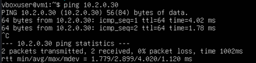

Before delving into the details, let us first define the objective of this home lab.
Objective: Create a miniature replica of a cloud platform such as AWS or Azure. The goal is to build an environment containing virtual machines, internal networking, APIs, dashboards, users, and other infrastructure components that are commonly found in a modern cloud platform.
Table Of Contents
- Setting Static IPs
- What the hell is a subnet anyways?
- Configuring Another Machine
- But How Do the Two Machines Discover Each Other?
- A Mistake that I made!
- Conclusion
In this setup we will create two virtual machines with static IP addresses using Netplan. To learn how to create a virtual machine, refer here. For this tutorial we will use VirtualBox.
Setting Static IPs
To do this we will use Netplan, a YAML-based approach to configuring network interfaces on Linux systems. YAML is a human-friendly data serialization language predominantly used for configuration files and infrastructure-as-code.
Netplan provides an abstraction layer that generates the necessary configuration files
for underlying backend services such as systemd-networkd or
NetworkManager.
In Linux, systemd services are background programs (called daemons) that are managed by the systemd init system. Systemd is responsible for starting and stopping services, managing dependencies, handling the boot process, and monitoring system components.
$ sudo cat /etc/netplan/00-installer-config.yaml
network:
version: 2
ethernets:
enp0s3:
dhcp4: true
dhcp6: true
match:
macaddress: 08:00:27:86:08:60
set-name: enp0s3
The above output is the default configuration and is fairly self-explanatory.
By default, VirtualBox configures an adapter using NAT. The interface
enp0s3 is therefore the interface through which the virtual machine
accesses the internet. We can verify this using utilities such as
ifconfig, ip, and ping.
We will now configure an internal network and assign a static IP address within that network. To create an internal network, open the VirtualBox settings for the virtual machine, add another network adapter, and set it to Internal Network.
network:
version: 2
ethernets:
enp0s3:
dhcp4: true
dhcp6: true
match:
macaddress: 08:00:27:86:08:60
set-name: enp0s3
enp0s8:
dhcp4: false
addresses:
- 10.2.0.10/24
Apply the configuration:
$ sudo netplan apply
We can verify that a static IP address has been assigned using either
ifconfig or the newer ip utility.
$ ifconfig enp0s8
enp0s8: flags=4163<UP,BROADCAST,RUNNING,MULTICAST> mtu 1500
inet 10.2.0.10 netmask 255.255.255.0 broadcast 10.2.0.255
inet6 fe80::a00:27ff:fedd:8732 prefixlen 64 scopeid 0x20<link>
ether 08:00:27:dd:87:32 txqueuelen 1000 (Ethernet)
RX packets 0 bytes 0 (0.0 B)
RX errors 0 dropped 0 overruns 0 frame 0
TX packets 411 bytes 25156 (25.1 kB)
TX errors 0 dropped 0 overruns 0 carrier 0 collisions 0
What the Hell Is a Subnet Anyways?
For the uninitiated, the following ranges are reserved for private networks:
- 10.0.0.0 - 10.255.255.255
- 172.16.0.0 - 172.31.255.255
- 192.168.0.0 - 192.168.255.255
Consider the range 10.0.0.0 - 10.255.255.255. This range contains 224 possible addresses. Managing such a large network as a single broadcast domain would be impractical, so we divide it into smaller networks called subnets.
For example:
- 10.2.0.0/24
- 10.3.0.0/24
- 10.2.0.0/16
Each of the above represents a subnet. The 24 and 16 portions are examples of CIDR notation and indicate how many bits are used for the network portion of the address. Refer here for more information on CIDR notation.
Configuring Another Machine
To configure another machine with a different static IP address in the same internal network, repeat the process described above. Assign a different address such as 10.2.0.11/24 and ensure that the adapter is connected to the same VirtualBox internal network.
But How Do the Two Machines Discover Each Other?
If you try to ping the second machine from the first machine, you will observe that the ping succeeds.

The interesting question is: How does the first machine know where the second machine is?
The answer lies in the Address Resolution Protocol (ARP). Before a host can send an Ethernet frame to another host on the same subnet, it must first determine the destination machine's MAC address. ARP is responsible for mapping IP addresses to MAC addresses.
To observe this process in action, we can use a tool called tcpdump.
$ sudo tcpdump -i enp0s8 -nn arp
In another terminal, clear the ARP cache and then ping the second machine.
$ sudo ip neigh flush dev enp0s8
$ ping 10.2.0.30
You should observe output similar to the following:
ARP, Request who-has 10.2.0.30 tell 10.2.0.10
ARP, Reply 10.2.0.30 is-at 08:00:27:aa:bb:cc
The first line is an ARP request. Machine A is essentially asking: "Who has IP address 10.2.0.30?"
The second machine responds with its MAC address. Machine A then stores this mapping in its ARP cache and can proceed to send ICMP packets (the packets used by ping).
We can inspect the ARP cache using:
$ ip neigh
Example output:
10.2.0.11 dev enp0s8 lladdr 08:00:27:aa:bb:cc REACHABLE
Now it is important for us to understand that the arp cache maintained by linux kernel is flushed periodically and is reupdated by sending ARP queires to the broadcast which is 10.2.0.255. 10.2.0.255 is a special ip which broadcast all the traffic coming to it to all the members of the subnet.
Funfact: Switch is a layer 2 device that transmits packets from source to destination. It does it via ARP portocol. As an exercise, read more about switches, osi model and ARP.
A Mistake that I made!
While configuring the two virtual machines, i accidently put the enp0s3 and enp0s8 interfaces on the same subnet and assigned them same static IP.
The problem with this is that while routing traffic to and from the machine, the kernel gets confused as to which interface the traffic should be directed? This creates confusion and weird output.
To debug this, I used the `ifconfig` command and figured out that both of these are on same subnet and changed the netplan configuration so that they are on different subnets.
(10.2.0.10 and 10.0.2.10 were supposed to be the actual ips but i set both to be 10.2.0.10 )
Conclusion
So far we have created two virtual machines and assigned static IPs to them. Also we understood how ARP works and some basic networking commands in linux.